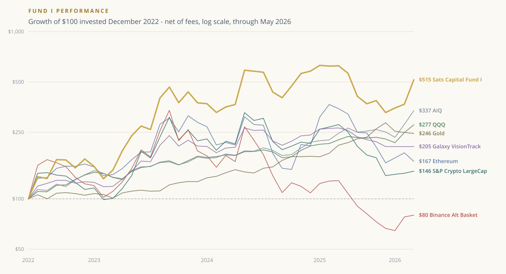
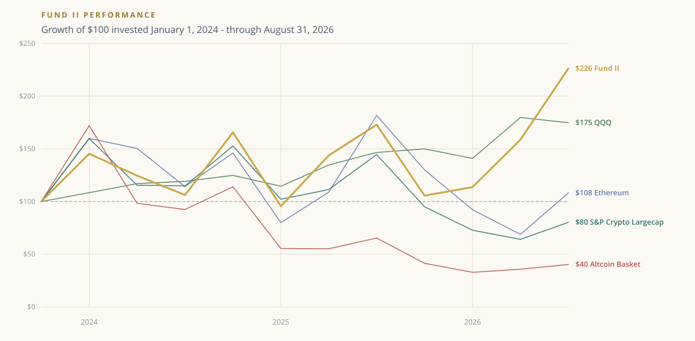

In the crypto markets since 2013 - firsthand experience through every high and low of the last 13 years. We launched Sats Capital in 2019 and went live with Fund I in February 2020, followed by Fund II in January 2024.
We invest with conviction, manage with discipline, and operate with the long-term perspective that separates serious participants from the noise. Both funds are actively managed, liquid vehicles built to keep pace with a rapidly evolving market.
Our view: the crypto setup is the most mispriced opportunity in global markets today - and we are positioned for it.
Both funds measured against the crypto, fund-peer and technology benchmarks we hold ourselves to - indexed to a $100 investment.

| Since January 1, 2023 | Total Return | CAGR |
|---|---|---|
| Sats Capital Fund I | 5.81× | 61.6% |
| AIQ | 3.22× | 37.5% |
| QQQ | 2.69× | 31.0% |
| Gold | 2.41× | 27.1% |
| Ethereum | 2.06× | 21.8% |
| Galaxy VisionTrack | 1.99× | 20.6% |
| S&P Crypto LargeCap | 1.55× | 12.6% |
| Binance Alt Basket | 0.80× | -6.0% |
Fund I returns are net of all fees. Period January 1, 2023 to August 31, 2026. Benchmarks indexed to $100 at January 1, 2023.

| Since January 1, 2024 | Total Return | CAGR |
|---|---|---|
| Sats Fund II | 2.26× | 35.5% |
| QQQ | 1.75× | 23.1% |
| Ethereum | 1.08× | 2.8% |
| S&P Crypto Largecap | 0.80× | -7.8% |
| Altcoin Basket | 0.40× | -28.7% |
Fund II returns are net of all fees. Period January 1, 2024 to August 31, 2026. Benchmarks indexed to $100 at January 1, 2024. The final period is an interim mark and not a completed quarter.
Index and benchmark data sourced from third-party providers. Past performance is not indicative of future results. All investments involve risk, including possible loss of principal.
Interested in Sats Capital or our funds? Share a few details and our team will be in touch, or email us directly at info@satscap.com.